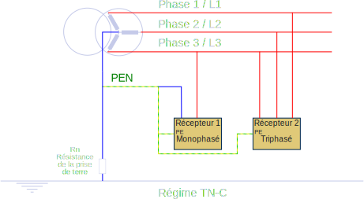
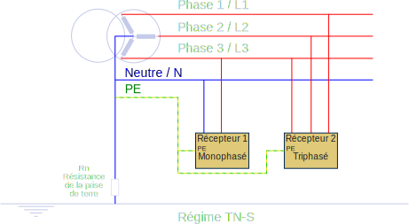
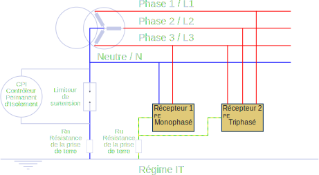

Schémas de Liaisons à la Terre
Régime TT
Le neutre du transformateur est relié à la terre, et les masses des équipements des utilisateurs disposent de leur propre raccordement à la terre.
- L'emploi d'un DDR (Dispositif Différentiel Résiduel) est obligatoire en tête d'installation pour assurer la protection des personnes. La valeur du courant résiduel maximum dépend de la règlementation du pays. Ainsi un DDR de 500 mA en tête d'installation ainsi que celui de valeur maximale 30 mA sur les circuits prises est obligatoire

Régime TN
Dans ce régime le neutre est mis à la terre et les masses sont reliées au neutre par un conducteur de protection. Deux cas qui se présentent :
Régime TNC :
Dans le TN-C (Terre Neutre Confondus), les conducteurs de neutre (N) et de protection (PE) sont confondus pour former le PEN.
Régime TNS :
Dans le TN-S, le conducteur de protection et le conducteur neutre sont reliés uniquement au poste de distribution et à aucun autre point.
Régime IT
Le neutre de la source de tension est isolé ou relié à la terre par une forte impédance, les masses d’installation sont reliées à la terre comme l’indique la figure suivante.
